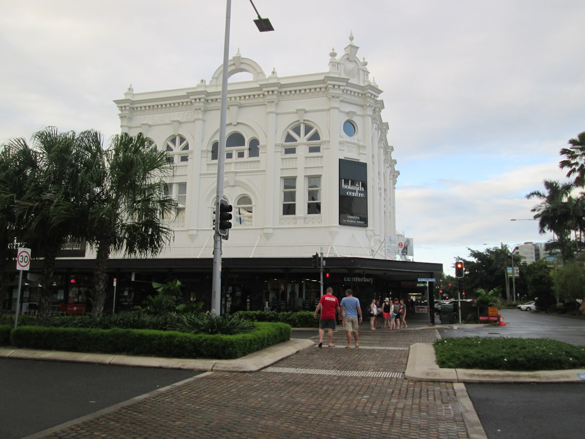

For a Queensland drive, the cleanest approach is to use three entry points from the source guide, state browsing, category browsing and articles, then commit to one anchor stop for the day. Big Thing Bible presents these landmarks as large scale sculptures and structures that have become iconic roadside attractions, so the useful test is fit, not volume. Pick the stop that matches the route, the people in the car and the length of break you actually want.
For travellers planning big things queensland into a real road trip, the better question is which landmark earns a stop on your route, rather than how many oversized attractions you can add to one day.
Big Things Queensland Explained
Big Thing Bible describes itself as Australia's complete guide to big things, which gives Queensland travellers a practical place to start. The source page already shows the main planning paths, a directory, state browsing, category browsing and articles. That structure is more useful than collecting random pins because it helps you narrow the list before you spend driving time on detours.
If the route is already fixed, begin with the state view and keep only the stops that sit naturally on the drive. If the people in the car care more about theme than geography, category browsing is the better first cut. If neither is clear yet, articles are the best entry point because they give enough context to decide what kind of landmark will feel worthwhile once you arrive.
Judge the stop by identity, not size alone
The source page defines big things as large scale sculptures and structures that have become iconic roadside attractions. That wording gives you a cleaner standard than simply looking for something large near the highway. A stop earns its place when it has a recognisable identity and feels tied to a local story, product, animal or comic idea, not just an oversized object beside the road.
The same page says these landmarks celebrate Australia's unique culture and larrikin spirit. In trip planning terms, that means the best stop is usually easy to explain to the group before you get there. If the attraction has a clear joke, symbol or theme, it is more likely to land as a memorable break. If the appeal is only that it is big, it may still suit a quick photo, but not necessarily a longer detour.
Who this applies to on a Queensland drive
This planning method suits travellers who want a stop to do a clear job in the day, not simply fill space on a map. Queensland road trips often have long legs between meal breaks, overnight stops and scenic sections, so a landmark works best when you decide its role early.
- First time visitors: start with route fit, then trim the list hard so only natural stops remain.
- Families: look for a landmark with an obvious visual theme that children will recognise quickly.
- Repeat road trippers: use category thinking to avoid choosing the same style of novelty stop every time.
- Travellers who like context: read the articles first, then move to the directory once you know what style of attraction you want.
That approach also helps when the landmark is only one part of a broader day out. Some stops work as the headline of a regional outing. Others are better used as a short reset between longer driving sections. Deciding which of those two jobs you want will usually cut the shortlist faster than searching for the most famous example.
Questions that remove weak options quickly
Before adding any landmark to the day, ask what you expect from the stop itself. A useful shortlist gets clearer when each option answers a specific need, such as a photo break, a themed stop for visitors, or a reason to spend a little more time in the surrounding town.
- Route fit: does the attraction sit on the drive, or does it ask too much extra road time for the return?
- Theme fit: will the people travelling with you care about the subject once they arrive?
- Stop length: are you planning a quick roadside pause, or do you want a place that can support a longer break nearby?
- Timing: is the stop better early in the day, as a midpoint reset, or near arrival when attention is fading?
These questions work well with the source site's layout. State browsing helps when route fit is the main constraint. Categories help when the travellers need a stronger theme. Articles help when the hard part is judging what kind of oversized attraction will feel satisfying instead of thin once the novelty wears off.
Build around one anchor stop, then leave space
Most day drives improve when you choose one anchor landmark and let the rest of the plan form around it. That keeps roadside attractions in proportion. You can still add lunch, a scenic section or a second brief stop, but the day is not forced to carry several marginal detours just because they exist on the map.
The source page uses the Big Banana and the Giant Koala as examples of Australia's well known oversized landmarks. The lesson for a Queensland itinerary is not to imitate another state's icons. It is to use the same selection standard: choose the attraction that is easiest to justify to the group, easiest to fit into the route and most likely to be remembered after the drive.
If you cannot say why a particular stop belongs in the day, leave it off. A cleaner plan usually produces a better road trip than a long list of attractions competing for the same daylight.
- Set the role. Decide whether the landmark is the main outing, a short photo break or a pause within a longer driving day.
- Choose the first filter. Use state browsing for route fit, category browsing for theme fit, or articles when you need context first.
- Trim the list. Remove any stop that asks for extra road time without a clear payoff for the people travelling.
- Lock the anchor. Build the rest of the day around one strong landmark and add anything else only if time remains.
| What you know first | Where to begin | Why it helps |
|---|---|---|
| Your route through Queensland | Browse by state | It keeps the shortlist tied to the drive |
| Your preferred theme | Browse by category | It narrows choices to attractions the group is more likely to enjoy |
| You need context before choosing | Read articles first | It helps you decide what kind of stop is worth adding |
Common questions
Should I start with state browsing or category browsing? Start with state browsing when the route is already fixed and category browsing when the travellers care more about a particular theme. If you are still deciding what kind of attraction suits the trip, the articles are the better first read.
What counts as a big thing on the source guide? The source page describes big things as large scale sculptures and structures that have become iconic roadside attractions. That makes recognisable identity more important than size by itself when you judge whether a stop is worth adding.
How many oversized landmark stops should one day include? The source material does not set a number, so the safer planning method is to choose one anchor stop first and add another only if it fits the route and the pace of the day. That keeps the itinerary realistic.
This guide covers how to shortlist and sequence oversized roadside landmarks for a Queensland drive using the source guide's directory, categories and articles.